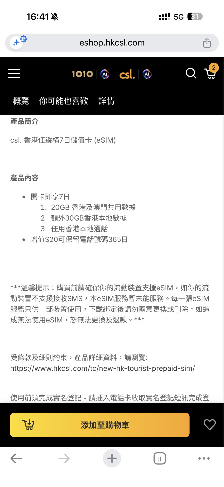
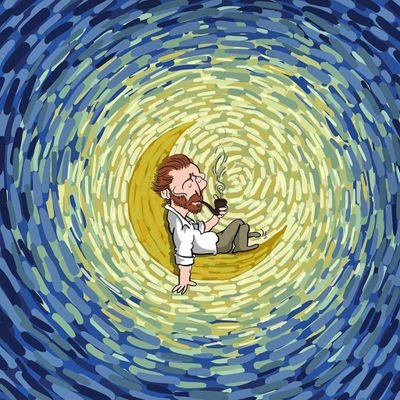

奶昔🥤
@realNyarime
@Vicotangonly 要号码的去买csl任纵横

Hpp2
@Hp2ai
The Club 重新上架了香港 CSL 保号卡，
这算是香港最强保号手机号之一。可注册主流AI App 如chatgpt claude等…
是Club sim的母公司，就算你不买也先用你的香港号码注册一下账号，(强烈推荐)。
68港币开卡送30港币，保号还是6港币一年
30余额可以买5次6元，(5年保号)
充 20 再保号 1 https://t.co/P2aDrHGf2D

Vico Tang
@Vicotangonly
@realNyarime 有号码吗？